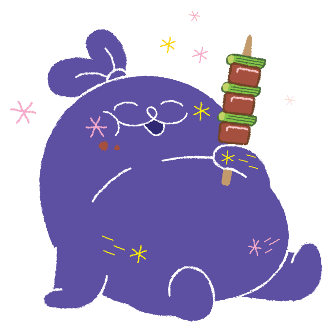
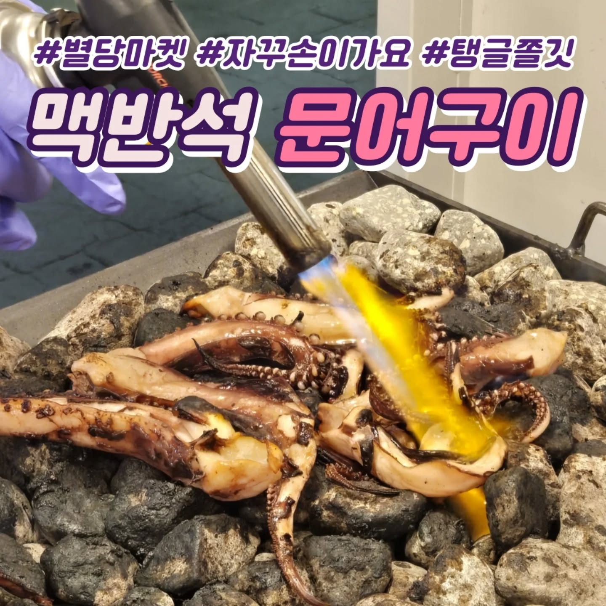

🛍️ 별당마켓 매대 소개


미니불족
족발, 닭발 최고의 저녁 안주

맥반석 문어구이
토치로 불맛까지 내주는 맥반석 문어구이

매대 3
메뉴 소개가 들어갈 공간입니다.

매대 4
메뉴 소개가 들어갈 공간입니다.

매대 5
메뉴 소개가 들어갈 공간입니다.

매대 6
메뉴 소개가 들어갈 공간입니다.

매대 7
메뉴 소개가 들어갈 공간입니다.


 블로그
블로그
 인스타그램
인스타그램
 카카오톡 채널
카카오톡 채널